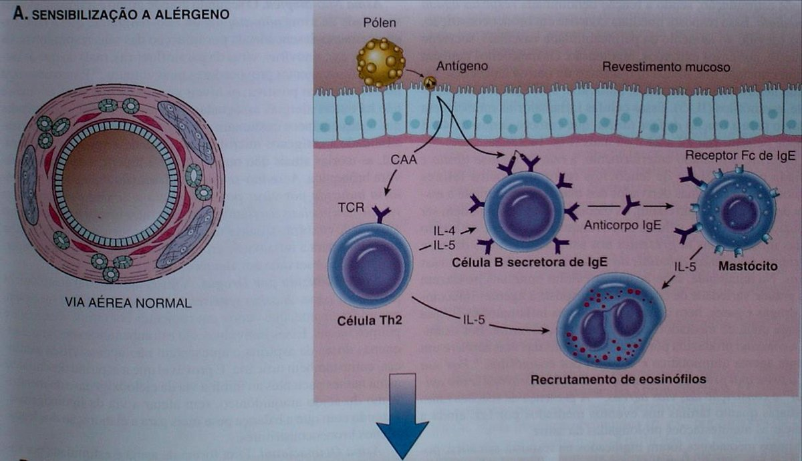
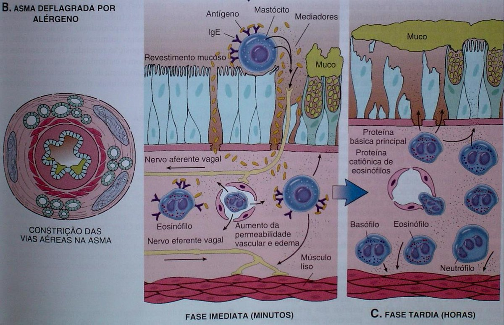
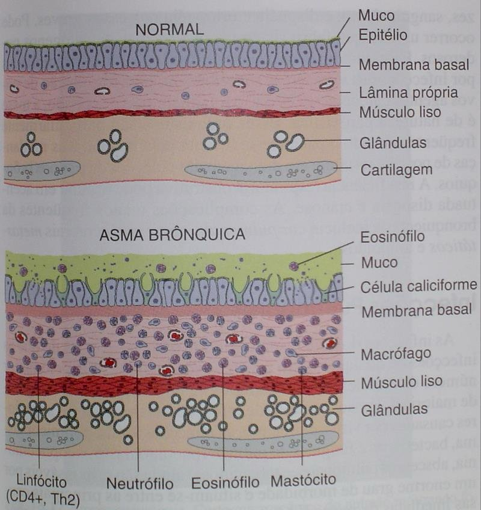
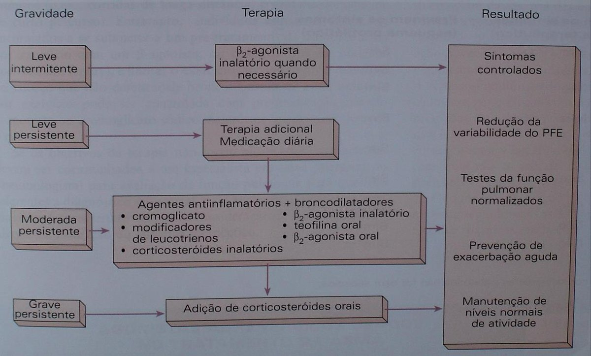

Córtex Estudos · 4º Semestre · Farmaco II · Aula 03
Broncodilatadores e Anti-inflamatórios
A farmacologia da asma inteira em uma aula: da regulação fisiológica das vias aéreas aos biológicos anti-IgE e anti-IL-5 — na ordem e com as ênfases do Prof. Adilson, incluindo as pegadinhas de prova que ele mesmo entregou.
1 · Como a respiração é regulada: bulbo, quimiorreceptores e SNA
A respiração é um ato involuntário: o BULBO dispara descargas rítmicas espontâneas, conduzidas pelo nervo frênico (e nervos intercostais) até a musculatura respiratória — diafragma e intercostais externos/internos. Quem regula a frequência desses disparos:
- Quimiorreceptores de O₂ — periféricos: seio carotídeo e glomo aórtico. "De forma muito inteligente da natureza": ficam exatamente onde o sangue está saindo para o corpo — medem a PO₂ do que vai nutrir os tecidos.
- Quimiorreceptores de CO₂ — centrais/medulares. CO₂ e O₂ competem pelo sítio de ligação no ferro da hemoglobina: quem tem mais, liga mais. CO₂ alto → AUMENTA a frequência respiratória (para "lavar" o CO₂); O₂ alto/CO₂ baixo → diminui.
🎯 O SNA nas vias aéreas: "o simpático faz TRÊS coisas, o parassimpático faz DUAS"
SIMPÁTICO: ① broncodilatação (via receptor β2 da musculatura lisa bronquiolar), ② ↓secreção respiratória, ③ vasoconstrição. PARASSIMPÁTICO: ① broncoconstrição, ② ↑secreção. A secreção existe de propósito — é barreira contra o atrito do ar — mas em pequena quantidade: em excesso, vira barreira para a troca gasosa. E broncodilatar demais também é ruim (hiperventilação → alcalose respiratória). Homeostasia = equilíbrio entre os dois — e é sobre esse equilíbrio que TODOS os fármacos da aula atuam.
Detalhe farmacológico: fármacos não são 100% seletivos — estimulantes respiratórios centrais pegam o centro respiratório do bulbo e outros centros, gerando efeitos indesejados. Guarde essa lógica: ela volta em cada classe.
2 · Obstrutivas × restritivas — e os 4 mecanismos de estreitamento
- RESTRITIVAS: diminuem o volume disponível para troca gasosa (trauma, afogamento…).
- OBSTRUTIVAS: produzem estreitamento das vias aéreas, especialmente dos bronquíolos (a parte funcional da troca): asma, DPOC, bronquite crônica, enfisema.
Os 4 mecanismos produtores de estreitamento
- 1Espasmo do músculo circular — constrição da musculatura lisa das vias aéreas.
- 2Inflamação da mucosa — o processo inflamatório engrossa a parede.
- 3Hipersecreção de muco — obstrui a luz e atrapalha o transporte ciliar.
- 4Perda do tecido elástico — nos processos CRÔNICOS (enfisema, fibrose): o pulmão enrijece e perde volume inspiratório.
🎯 "Asma, DPOC, bronquite: o tratamento é o MESMO — os fármacos são os mesmos"
O que muda entre as doenças (e entre os graus) é o protocolo e a combinação — isso vem depois, com os consensos da pneumo. O trabalho desta aula é entender os fármacos: sabendo as classes, qualquer protocolo clínico fica legível. Por isso a asma é o modelo de estudo — uma das principais doenças respiratórias.
3 · Asma: definição, números e fatores desencadeantes
ASMA = afecção das vias aéreas inferiores caracterizada por aumento da responsividade brônquica a vários estímulos, manifestando-se por obstrução das vias aéreas com alteração espontânea ou terapêutica (reversível sozinha nos casos leves; com tratamento, nos demais).
- Números que ele destacou: ~36 milhões de asmáticos no Brasil; e — dado que surpreendeu o próprio professor — mais de 1.000 mortes/ano por asma grave: o paciente broncoconstringe, dessatura, recebe a medicação (β2, xantina EV, corticoide) e não responde. Não existe terapêutica suficiente para todos os casos.
- Sinais: dispneia, hipersecreção de muco, retração torácica, dificuldade inspiratória, sibilância, tosse; nos graves, cianose e dessaturação. Doença altamente angustiante — por isso o asmático deve andar com o broncodilatador de resgate na bolsa.
- Fatores desencadeantes: infecções (virais, sinusite bacteriana), alérgenos (pólen, produtos de origem animal, fungos, poeira/ácaro), irritantes (gases, odores, fumaça de cigarro), farmacológicos (aspirina), psicossociais (choro e riso = hiperventilação), frio e exercício.
🎯 "Descobrir o fator desencadeante é a base de tudo"
O controle ambiental é tratamento: tirar o bichinho de pelúcia (junta poeira), cuidar de cortinas, bolor, animais ("a resposta é dose-dependente — de gato, de cachorro"). E ele foi honesto com a dimensão social: como dizer a uma criança em habitação precária que "não pode ter poeira"? O exemplo oposto: o amigo biomédico, asmático grave cujo gatilho é fumaça de cigarro — e tabagista: "acendia o cigarro com uma mão e segurava a bombinha na outra". Várias internações em UTI. Sem controle do desencadeante, a farmacologia enxuga gelo.
4 · O modelo alérgico: IgE, IL-5 e as duas fases da crise
A asma alérgica é uma doença inflamatória de natureza imune/alérgica. O circuito:
- Sensibilização: o alérgeno encontra a via aérea → células Th2 → IL-4/IL-5 → célula B produz IgE → IgE arma os mastócitos (receptor Fc de IgE).
- IL-5 recruta EOSINÓFILOS — que hipersecretam mais IgE, estimulando mais mastócito: um circuito redundante que se retroalimenta.
🎯 Fase IMEDIATA (minutos): quem broncoconstringe é o VAGO
Na fase aguda, a degranulação mastocitária dispara um reflexo: via aferente vagal sobe, e o eferente vagal desce comandando a contração. A musculatura lisa é autonômica — quem contrai é acetilcolina em receptor MUSCARÍNICO. Ou seja: a broncoconstrição da resposta alérgica é mediada pelo PARASSIMPÁTICO (resposta colinérgica muscarínica) + hipersecreção de muco. Isso explica por que anticolinérgicos broncodilatam.
- Fase TARDIA (horas): o muco não é removido rápido, células caliciformes seguem hipersecretando, eosinófilos migram e mantêm IgE/histamina/IL-5 circulando → broncoconstrição e inflamação persistem. No lavado dessa secreção, acham-se eosinófilos — a assinatura da asma como doença inflamatória alérgica.



5 · Gravidade e degraus de tratamento
| Grau | Critério de crises | Tratamento |
|---|---|---|
| Leve intermitente | < 1 crise/semana | β2-agonista inalatório QUANDO NECESSÁRIO (+ controle ambiental) |
| Leve persistente | > 1/semana, mas < 1/dia | terapia medicamentosa DIÁRIA |
| Moderada persistente | crises diárias; afeta trabalho/estudo | anti-inflamatório + broncodilatador: corticoide inalatório, cromoglicato ou antileucotrieno + β2 inalatório (ou teofilina oral / β2 oral) |
| Grave persistente | limita atividade física; sintomas noturnos; ↓VEF na espirometria | adição de corticosteroide ORAL |
⚠️ Basta UMA característica de gravidade para subir a classificação
Como na pressão arterial (sistólica OU diastólica alterada já classifica): o pior achado dita o grau. E no estado de mal asmático — a crise grave que não responde, com risco de morte — o corticoide vai ENDOVENOSO.

6 · Quem PREVINE × quem REVERTE
Reverter = reverter a crise (a broncoconstrição instalada). Prevenir = impedir que ela venha. A tabela que ele mandou guardar:
| Terapia | Previne | Reverte |
|---|---|---|
| β2-agonistas | ✅ | ✅ |
| Teofilina | ✅ | ✅ |
| Cromoglicato inalatório | ✅ | — |
| Antileucotrienos | ✅ | — |
| Corticoide INALATÓRIO | ✅ | — |
| Corticoide SISTÊMICO (oral/EV) | ✅ | ✅ |
| Anticolinérgicos | ✅ | ✅ |
| Controle ambiental | ✅ | — |
| Imunoterapia | ✅ | — |
🔗 Por que preferir o corticoide inalatório?
Porque reduz os efeitos sistêmicos. Se não for suficiente, entra o sistêmico — "aí aguenta o Cushing", e se o uso passar de 2 semanas, precisa de esquema de desmame na retirada.
7 · Agonistas β-adrenérgicos: o carro-chefe
- Dois grupos: CATECOLAMINAS (isoproterenol, adrenalina) — maior afinidade também por β1 cardíaco → mais efeitos cardiovasculares; e RESORCINÓIS (terbutalina, fenoterol, salbutamol, salmeterol, formoterol) — mais seletivos β2 respiratórios, principalmente por via inalatória (por via parenteral pegam mais β1).
- São todos análogos estruturais: pequenas adições de grupos orgânicos mudam seletividade, potência, efeitos indesejados e meia-vida.
🎯 Mecanismo celular (ele desenhou o caminho): β2 → AMPc → PKA → ↓Ca²⁺ → relaxa
O agonista liga no receptor β2 da musculatura lisa das vias aéreas → ↑AMPc intracelular → ativa a PKA (proteína quinase A) → ↓concentração de Ca²⁺ → "não tem cálcio, a musculatura não contrai" → relaxamento de toda a musculatura lisa das vias aéreas.
- Ações farmacológicas além do relaxamento: inibem a liberação de mediadores broncoconstritores pelos mastócitos (um papel anti-inflamatório) e aumentam o transporte mucociliar (ajudam a remover o muco).
- Seletividade é segurança 🎯: o salbutamol prefere β2 27× mais que β1 — sem isso, "todo mundo que usasse teria minimamente uma arritmia". O salmeterol chega a ~3.000×. Quanto maior a afinidade β2, maior a broncodilatação e menor o risco cardiovascular.
- Efeitos colaterais (o que escapa para o sistema): tremores de extremidade (o mais comum), taquicardia e palpitação (β1: ↑frequência E força de contração), agitação/ansiedade, vasodilatação periférica (β2 arterial), HIPOCALEMIA, e hiperglicemia — o β2 pancreático DIMINUI a secreção de insulina (cuidado redobrado no diabético). Doses elevadas: necrose miocárdica, ↑ácidos graxos livres, arritmia, parada cardiorrespiratória. Tudo dose-dependente; a via inalatória minimiza (mas não zera) os efeitos sistêmicos.
- Há até um efeito paradoxal possível: broncodilatar áreas mal perfundidas desequilibra ventilação/perfusão → hipoxemia transitória.
8 · SABA × LABA — e os riscos do abuso
| SABA (short-acting) | LABA (long-acting) | |
|---|---|---|
| Fármacos | salbutamol (Aerolin), terbutalina (Bricanil — também EV em bomba), pirbuterol | salmeterol, formoterol |
| Início | 1–3 min (praticamente instantâneo) | lento (~15 min) |
| Pico | 30–60 min | 30–60 min |
| Duração | 4–6 h | 12–24 h |
| Papel | RESGATE da crise (intermitente) | uso diário na persistente/moderada; vem associado ao corticoide inalatório na mesma preparação |
🎯 "Quem vai aguentar 15 minutos de crise?" — e por que o abuso mata
Na crise, só o SABA serve — o LABA demora a agir. E salbutamol + terbutalina "vai cair na prova". Mas atenção ao aviso duplo: ① o uso prolongado AGRAVA a hiper-reatividade brônquica — a asma é uma resposta a uma agressão; se você só bloqueia a resposta sem tirar o agressor, a resposta seguinte vem mais forte, e o paciente usa cada vez mais; ② o abuso se relaciona com aumento do risco de MORTE por asma — e também de morte cardiovascular, porque a dose alta estimula β1. Uso indicado: 3–4×/dia, com o desencadeante controlado.
9 · Anticolinérgicos: ipratrópio e a pegadinha da prova
- MOA: bloqueiam os receptores muscarínicos (M3) da musculatura lisa → inibem o tônus vagal intrínseco das vias aéreas (aquele mesmo eferente colinérgico da fase imediata) → broncodilatação. Também bloqueiam a broncoconstrição REFLEXA por irritantes inalados.
- Não são os broncodilatadores preferenciais (os β2 são): o efeito demora ~15 minutos.
- Fármacos: brometo de IPRATRÓPIO (Atrovent) = SAMA (antagonista muscarínico de curta ação) — início 15 min, meia-vida ~8 h, via inalatória; TIOTRÓPIO = LAMA (longa ação, meia-vida >12 h).
- Indicação: broncodilatador ADICIONAL — para idosos, lactentes e, principalmente, DPOC, em que o tônus vagal é um componente reversível importante da obstrução.
🎯 A pegadinha que ele já aplicou em prova
"Quais os efeitos indesejados dos anticolinérgicos inalatórios?" A turma inteira respondeu boca seca, visão turva, constipação, retenção urinária — os efeitos da ATROPINA. Errado: o ipratrópio inalatório tem MÁ absorção (gastrointestinal e sistêmica) — é praticamente ISENTO desses efeitos. Droga segura e bem tolerada. Os efeitos atropínicos valem para a atropina, que é bem absorvida por via oral — não para o Atrovent.
10 · Metilxantinas: teofilina (e o cafezinho)
- Fármacos: aminofilina e teofilina (a cafeína também é metilxantina: broncodilatadora fraca, estimulante central do bulbo — o "efeito off-label" do cafezinho — e diurético fraco).
- Posição no plano: aplicação TARDIA — não é droga de urgência de primeira linha (embora a teofilina EV apareça no estado de mal asmático).
MOA: 4 hipóteses (mecanismo "discutível")
- 1Inibição da FOSFODIESTERASE → ↑AMPc — chega ao mesmo resultado do β2, mas por outra via: impede a degradação do AMPc.
- 2Antagonismo do receptor de ADENOSINA — a adenosina participa da broncoconstrição.
- 3↓liberação de Ca²⁺ intracelular + ↑liberação de catecolaminas — que são broncodilatadoras.
- 4Efeitos anti-inflamatórios — componente adicional.
- Farmacocinética 🎯: vias parenteral, oral e retal — nunca inalatória: são IRRITANTES respiratórios ("um broncodilatador que quimicamente irrita a via aérea"). Boa absorção GI, metabolismo hepático, janela estreita: 5–10 mg/L.
- Fatores que AUMENTAM a teofilina plasmática (risco de toxicidade): idade avançada, infecções virais agudas, insuficiência cardíaca (↓perfusão hepática), insuficiência hepática, e fármacos que atrapalham seu metabolismo — eritromicina, alopurinol (uricosúrico com alta ligação a proteínas plasmáticas → interação farmacocinética), cetoconazol (antifúngico) e cimetidina (o anti-H2 padrão histórico — saiu de linha; hoje, famotidina).
- Efeitos colaterais: GI (anorexia, náuseas, vômitos), cefaleia, ↑excitabilidade (agitação, tremor), diurese, crises epilépticas. NÃO recomendada para GESTANTES (categoria de risco — só em último caso).
11 · Cromonas: a profilaxia da pediatria
- Fármacos: cromoglicato dissódico e nedocromil sódico. São ANTI-INFLAMATÓRIOS, não broncodilatadores.
- MOA: inibem a degranulação mastocitária — estabilizam canais de cloreto na membrana do mastócito, impedindo a despolarização → sem liberação de histamina/mediadores. (In vitro, ação também em macrófagos e eosinófilos.)
- Uso: PROFILAXIA da asma, principalmente em CRIANÇAS (excelente tolerabilidade). Administrar ANTES da exposição — ao alérgeno, ao exercício ("a criança vai correr no recreio"), ao frio. Por isso ela só PREVINE, não reverte.
- Farmacocinética: cromoglicato — inalatório, meia-vida 90 min → 4 doses/dia, mal absorvido no TGI; nedocromil — igual, mas 2 doses/dia.
- Efeitos: irritação faríngea, tosse, sensação de boca seca; hipersensibilidade extremamente rara.
12 · Antileucotrienos — e por que anti-histamínico não trata asma
🎯 Leucotrienos: o mediador DAS vias aéreas — 100× mais potente que a histamina
Do ácido araquidônico, a 5-LIPOXIGENASE gera os leucotrienos cisteínicos (C4, D4, E4). Enquanto a prostaglandina age no corpo todo, o leucotrieno é o mediador característico das vias aéreas (inferiores E superiores — daí o uso em rinite e sinusite). Efeitos do LTD4: ↑permeabilidade vascular (edema → ↓movimento ciliar → acúmulo de muco), quimiotaxia de eosinófilos (que secretam mais leucotrienos — cascata), hipersecreção de muco e broncoconstrição 100× mais potente que a histamina. LTB4 → recruta neutrófilos.
⚠️ Por que NÃO usar anti-histamínico na asma
Porque bloquear o mediador 100× menos importante não faz sentido: melhor antagonizar o leucotrieno. Além disso, os anti-histamínicos de 1ª geração (prometazina/Fenergan) atravessam a barreira hematoencefálica e bloqueiam H3/H4 centrais → sedação intensa (a histamina central libera neurotransmissores); os de 2ª geração atravessam menos. H1 = o receptor da alergia (pele, pulmão, intestino — onde encontramos alérgenos). Anti-histamínico tem lugar na alergia, não na asma.
- Antagonistas do receptor CysLT: MONTELUCASTE (Montelair — o mais usado; dose única de 10 mg, meia-vida 5 h; muito usado também em rinite/sinusite) e ZAFIRLUCASTE (20 mg de 12/12 h, meia-vida 10 h).
- ZILEUTON: caminho diferente — inibidor da 5-lipoxigenase: inibe a SÍNTESE dos leucotrienos (suprime inclusive o LTB4). Fora de uso no Brasil.
- Farmacocinética 🎯: via oral, metabolismo hepático; com refeição a biodisponibilidade cai 40% — não tomar junto das refeições. Broncodilatação inicial em horas; efeito anti-inflamatório em semanas.
- Uso: MONOTERAPIA na asma leve (segura bem as crises, junto com controle ambiental); moderada/grave → associar ao β2. Bem tolerados; podem alterar provas de função hepática (AST, ALT, gama-GT).
13 · Corticosteroides: inalatórios × sistêmicos
- MOA (já visto): inibem a fosfolipase A2 (via síntese de lipocortina-1/anexina) e inibem os genes que codificam a COX-2 — cortam a inflamação na nascente.
- SISTÊMICOS: hidrocortisona e metilprednisolona na crise aguda (pico de ação rápido); nas exacerbações, corticoide ORAL (prednisona/prednisolona). Regra da retirada: suspensão abrupta só se o uso durou menos de 2 semanas — acima disso, esquema de desmame. Estado de mal asmático → endovenoso.
- INALATÓRIOS = via preferencial e os mais usados no controle: aerossol dosificado ou pó seco.
🎯 Beclometasona: o mais favorável — e o porquê físico-químico
O dipropionato de BECLOMETASONA é o corticoide inalatório mais favorável para o controle da asma porque tem BAIXA hidrossolubilidade e lentas taxas de dissolução e absorção → fica agindo localmente na via aérea, com pouco efeito sistêmico. Outros: flunisolida, budesonida, triancinolona, fluticasona (potência tópica ~2× a da beclometasona — mais novos, mais potentes e mais caros).
14 · Imunoterapia: omalizumabe e os anti-IL-5
🎯 "O filé do negócio — e já disponível na rede pública"
Os -mabes são anticorpos monoclonais. O precursor: OMALIZUMABE — anti-IgE: bloqueia a ligação da IgE aos receptores de mastócitos e eosinófilos, desligando a ativação alergênica na raiz. Indicação: asma GRAVE refratária (o paciente que já está em terapia tripla — xantina + broncodilatador + corticoide — com score de qualidade de vida despencando). Via subcutânea a cada 2–4 semanas; ~R$ 2.000 o frasco, mas disponível na farmácia de alto custo.
- Anti-IL-5 (asma EOSINOFÍLICA): mepolizumabe e reslizumabe bloqueiam a interleucina-5 — o principal mediador da resposta asmática; benralizumabe bloqueia o receptor da IL-5.
- Curiosidade farmacocinética que ele destacou: meia-vida de ~2 dias, mas AÇÃO de ~20 dias, independente da dose — o bloqueio da via é duradouro; 1–2 aplicações por mês.
- O caso real: paciente grave, "vida no score lá em cima", conseguiu o biológico na farmácia de alto custo, voltou a praticar esporte — "uma mudança muito grande na qualidade de vida".
✅ Resumo rápido da aula
- Regulação: bulbo → frênico; O₂ = quimiorreceptores periféricos (carotídeo/aórtico), CO₂ = centrais; CO₂ alto → ↑FR. Simpático: broncodilata (β2) + ↓secreção + vasoconstri; parassimpático: broncoconstringe + ↑secreção.
- Obstrutivas (asma, DPOC, bronquite, enfisema — "fármacos são os mesmos") × restritivas. 4 mecanismos: espasmo, inflamação, hipersecreção, perda elástica.
- Asma: hiper-responsividade + obstrução reversível; 36 mi no Brasil, >1.000 mortes/ano; descobrir o desencadeante = base de tudo. Modelo alérgico: Th2 → IL-5/IgE → mastócito/eosinófilo; fase imediata = broncoconstrição VAGAL muscarínica (minutos); tardia = eosinófilos perpetuam (horas).
- Degraus: intermitente = SABA prn → leve persistente = diária → moderada = anti-inflamatório + broncodilatador → grave = corticoide ORAL; estado de mal = EV. Basta 1 critério de gravidade.
- Previne × reverte: só previnem = cromonas, antileucotrienos, corticoide INALATÓRIO, controle ambiental, imunoterapia; previnem E revertem = β2, teofilina, anticolinérgicos, corticoide SISTÊMICO.
- β2: AMPc→PKA→↓Ca→relaxa; catecolaminas × resorcinóis; seletividade = segurança (salbutamol 27×; salmeterol 3.000×). SABA (salbutamol/terbutalina; 1–3 min; resgate) × LABA (salmeterol/formoterol; 12–24 h; diário + corticoide). Colaterais: tremor, taquicardia, hipocalemia, hiperglicemia (↓insulina). Abuso: agrava hiper-reatividade + risco de morte.
- Anticolinérgicos: bloqueiam M3/tônus vagal; ipratrópio (SAMA, 15 min, 8 h) e tiotrópio (LAMA); ADICIONAIS p/ idosos, lactentes, DPOC; praticamente ISENTOS de efeitos atropínicos (má absorção) — pegadinha.
- Teofilina: ↑AMPc (inibe fosfodiesterase) + antagoniza adenosina; janela 5–10 mg/L; nunca inalatória (irritante); níveis sobem com idade, infecção viral, IC, insuf. hepática, eritromicina/alopurinol/cetoconazol/cimetidina; não em gestantes.
- Cromonas: estabilizam mastócito; profilaxia em CRIANÇAS, antes da exposição; só previnem.
- Antileucotrienos: LT = mediador DAS vias aéreas, 100× histamina (por isso anti-histamínico não trata asma); montelucaste/zafirlucaste (receptor) × zileuton (síntese/5-LOX); longe das refeições (↓40%); monoterapia na asma leve.
- Corticoides: inalatório = preferencial (beclometasona: baixa hidrossolubilidade = ação local); sistêmico na crise (hidrocortisona/metilprednisolona; oral prednisona; >2 semanas = desmame; estado de mal = EV).
- Biológicos: omalizumabe (anti-IgE, asma grave, SC 2–4 sem) · mepolizumabe/reslizumabe (anti-IL-5) · benralizumabe (anti-receptor IL-5) — asma eosinofílica; meia-vida 2 d, ação 20 d; alto custo/rede pública.
💊 Resumão Pré-Prova — Broncodilatadores e Anti-inflamatórios
Revisão da véspera · Farmaco II · Aula 03 (Prof. Adilson) · só o que foi enfatizado
- Bulbo dispara → nervo frênico → diafragma/intercostais. O₂ = quimiorreceptores periféricos (seio carotídeo, glomo aórtico) · CO₂ = centrais/medulares. CO₂ alto → ↑FR ("lavar CO₂").
- Simpático (3): broncodilata (β2) + ↓secreção + vasoconstri · Parassimpático (2): broncoconstringe + ↑secreção.
- Obstrutivas (asma, DPOC, bronquite, enfisema) × restritivas (↓volume). 4 mecanismos: espasmo · inflamação · hipersecreção · perda elástica (crônicos). "Os fármacos são os mesmos" entre asma e DPOC — muda o protocolo.
- Hiper-responsividade brônquica + obstrução com alteração espontânea/terapêutica. 36 milhões no Brasil; >1.000 mortes/ano (broncoconstringe, dessatura e não responde).
- Desencadeantes: vírus/sinusite · pólen/animais/fungos/POEIRA (bichinho de pelúcia!) · fumaça de cigarro · ASPIRINA · choro/riso (hiperventilação) · frio · exercício. Descobrir o fator = a base de tudo.
- Modelo alérgico: Th2 → IL-4/IL-5 → célula B → IgE → mastócito; IL-5 recruta EOSINÓFILOS (que fazem mais IgE — redundância).
- Fase IMEDIATA (min): broncoconstrição VAGAL (ACh em receptor muscarínico) + hipersecreção · Fase TARDIA (h): eosinófilos perpetuam inflamação; lavado com eosinófilos.
| Grau | Crises | Tratamento |
|---|---|---|
| Leve intermitente | <1/semana | SABA quando necessário |
| Leve persistente | >1/sem, <1/dia | medicação diária |
| Moderada persistente | diárias | anti-inflamatório + broncodilatador (corticoide inalatório + β2/LABA; teofilina oral) |
| Grave persistente | limita atividade; sintomas noturnos; ↓VEF | + corticoide ORAL · estado de mal = EV |
- Grupos: catecolaminas (isoproterenol, adrenalina — pegam β1 = coração) × RESORCINÓIS (terbutalina, fenoterol, salbutamol, salmeterol, formoterol — seletivos β2, inalatórios). Todos análogos estruturais.
- MOA: β2 (musculatura lisa) → ↑AMPc → ativa PKA → ↓Ca²⁺ → relaxamento. + inibe mediadores do mastócito + ↑transporte mucociliar.
- Seletividade = segurança: salbutamol 27× β2>β1 · salmeterol ~3.000×. Mais β2 = mais broncodilatação e menos risco cardiovascular.
- SABA (salbutamol/Aerolin, terbutalina/Bricanil): início 1–3 min, dura 4–6 h → RESGATE. LABA (salmeterol, formoterol): início ~15 min, dura 12–24 h → uso diário, associado ao corticoide inalatório na mesma preparação. "Quem aguenta 15 min de crise?" — crise = SABA.
- Colaterais: tremor de extremidade (o mais comum) · taquicardia/palpitação (β1: ↑FC e força) · agitação · vasodilatação · HIPOCALEMIA · HIPERGLICEMIA (β2 ↓insulina — diabético!) · V/Q → hipoxemia transitória. Doses altas: necrose miocárdica, arritmia, PCR.
- MOA: bloqueiam M3 → inibem o TÔNUS VAGAL intrínseco → broncodilatação; bloqueiam broncoconstrição REFLEXA por irritantes. Não são preferenciais (15 min p/ agir).
- Ipratrópio (Atrovent) = SAMA: 15 min, meia-vida ~8 h, inalatório · Tiotrópio = LAMA (>12 h).
- Indicação: ADICIONAL para idosos, lactentes e DPOC (tônus vagal = componente reversível importante).
- Aminofilina + teofilina (cafeína = xantina fraca: broncodilata, estimula o bulbo, diurético fraco). Aplicação TARDIA no plano.
- MOA (4 hipóteses): inibe FOSFODIESTERASE → ↑AMPc · antagoniza receptor de ADENOSINA · ↓Ca²⁺ + ↑catecolaminas · anti-inflamatório.
- Vias: parenteral/oral/retal — NUNCA inalatória (irritante respiratório). Janela: 5–10 mg/L.
- ↑nível plasmático: idade avançada · infecção viral aguda · IC · insuf. hepática · eritromicina, alopurinol, cetoconazol, cimetidina (interações no metabolismo hepático).
- Colaterais: GI, cefaleia, ↑excitabilidade, diurese, crise epiléptica. NÃO para GESTANTES.
- Cromonas (cromoglicato, nedocromil): estabilizam o MASTÓCITO (canais de cloreto → sem degranulação). PROFILAXIA em CRIANÇAS, ANTES da exposição (recreio, frio, alérgeno). Só previnem. Cromoglicato: 90 min → 4×/dia; nedocromil 2×/dia.
- Leucotrienos (C4/D4/E4, via 5-LIPOXIGENASE do ác. araquidônico): O mediador das VIAS AÉREAS — broncoconstrição 100× mais potente que histamina; edema, ↓movimento ciliar, muco, quimiotaxia de eosinófilos. LTB4 → neutrófilos.
- Drogas: MONTELUCASTE (Montelair, 10 mg 1×/dia — o mais usado; serve rinite/sinusite) · zafirlucaste (20 mg 12/12 h) = antagonistas do receptor · ZILEUTON = inibe a 5-LOX (a SÍNTESE), fora de uso no Brasil.
- Longe das refeições (biodisponibilidade cai 40%). Broncodilata em horas; anti-inflamatório em semanas. Monoterapia na asma LEVE; moderada/grave = associar β2. Podem alterar AST/ALT/gama-GT.
- Anti-histamínico NÃO trata asma: histamina é 100× menos importante que o leucotrieno; 1ª geração (prometazina/Fenergan) ainda seda (atravessa BHE, bloqueia H3/H4 centrais).
- MOA: inibem fosfolipase A2 (lipocortina-1) + genes da COX-2.
- Sistêmicos: crise aguda = hidrocortisona/metilprednisolona (pico rápido) · exacerbação = prednisona/prednisolona ORAL · estado de mal = EV. >2 semanas de uso = desmame (abrupto só se <2 sem).
- Inalatórios = via preferencial: BECLOMETASONA é o mais favorável — baixa hidrossolubilidade + lenta dissolução/absorção = efeito LOCAL, pouco sistêmico (sem Cushing). Outros: budesonida, flunisolida, triancinolona, fluticasona (potência ~2× beclometasona; mais caros).
- OMALIZUMABE = anti-IgE (o precursor): bloqueia IgE nos receptores de mastócitos/eosinófilos. Asma GRAVE refratária (terapia tripla falhando). SC a cada 2–4 semanas; ~R$2.000/frasco; farmácia de alto custo.
- Anti-IL-5 (asma EOSINOFÍLICA): mepolizumabe e reslizumabe bloqueiam a IL-5; benralizumabe bloqueia o RECEPTOR da IL-5 — o principal mediador da resposta asmática.
- Meia-vida ~2 dias, AÇÃO ~20 dias (bloqueio duradouro da via) — 1–2 aplicações/mês.
- SABA × LABA: resgate 1–3 min/4–6 h × diário 15 min/12–24 h. Crise = SABA sempre.
- Catecolaminas × resorcinóis: β1+β2 (coração) × seletivos β2 (respiratório).
- Ipratrópio × atropina: inalatório mal absorvido = SEM efeitos atropínicos × VO bem absorvida = boca seca etc.
- Montelucaste × zileuton: antagonista do RECEPTOR de LT × inibidor da SÍNTESE (5-LOX).
- Corticoide inalatório × sistêmico: só previne, efeito local × previne e reverte, crise (e Cushing/desmame).
- Omalizumabe × mepolizumabe/benralizumabe: anti-IgE × anti-IL-5/anti-receptor de IL-5.
- Leucotrieno × histamina: 100× mais potente nas vias aéreas — por isso antileucotrieno sim, anti-histamínico não.
- Quimiorreceptor de O₂ × de CO₂: periférico (carotídeo/aórtico) × central (medular).
- Broncoconstrição alérgica: quem executa é o VAGO (ACh/muscarínico) — não a IgE diretamente.
- "Crise agora" → SABA (salbutamol/terbutalina) — nunca LABA.
- "Asmático diabético piorou a glicemia" → β2 ↓insulina (hiperglicemia) + lembrar hipocalemia.
- "Idoso/lactente/DPOC precisando de mais broncodilatação" → ipratrópio ADICIONAL.
- "Teofilina + eritromicina/cetoconazol/cimetidina" → nível sobe → toxicidade (janela 5–10).
- "Gestante" → teofilina NÃO.
- "Criança antes do recreio/frio" → cromoglicato (profilaxia).
- "Rinite + asma leve, monoterapia oral" → montelucaste (longe das refeições).
- "Corticoide oral >2 semanas" → desmame obrigatório.
- "Asma grave refratária + IgE alta" → omalizumabe · "eosinofílica" → anti-IL-5.
Banco de Questões — Broncodilatadores e Anti-inflamatórios
Farmaco II · Aula 03 · estilo ENADE/residência.